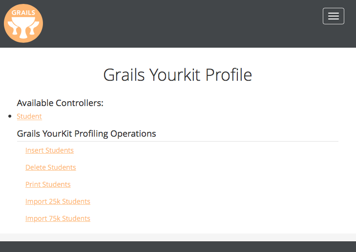
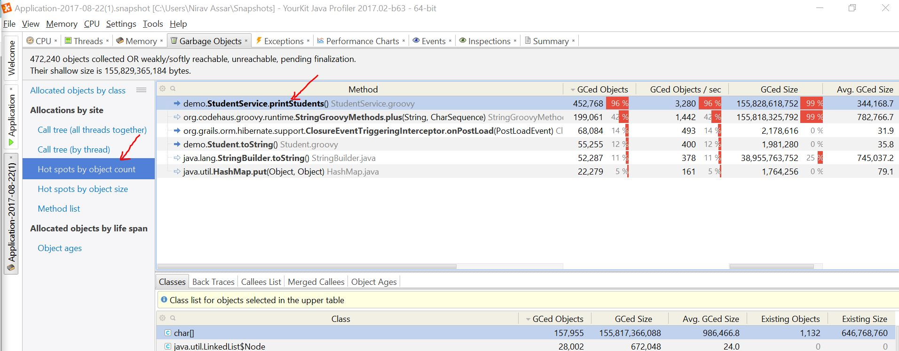
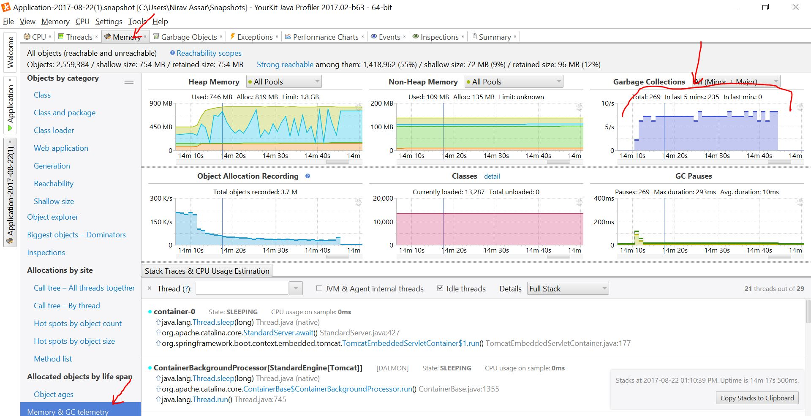

Grails YourKit Profiling
In this guide you will learn how to profile Memory and CPU on a Grails applications using the YourKit Java Profiler tool.
Authors: Nirav Assar
Grails Version: 3.3.2
1 Grails Training
Grails Training - Developed and delivered by the folks who created and actively maintain the Grails framework!.
2 Getting Started
In this guide you are going to learn how to profile memory and CPU on a Grails Application. An application is already created for you with contrived scenarios that spike memory and CPU parameters. We will examine these scenarios and the associated code in order to profile memory, CPU, heap and garbage collection. We will then continue to optimize the code and see how it affects performance.
Note that the focus of this guide is to analyze with the profiler, not necessarily Grails development. Thus the performance problems are rudimentary and obvious, as well the code solutions. The code solutions are already created for you to be injected while you follow along in the guide.
2.1 What you will need
To complete this guide, you will need the following:
-
Some time on your hands
-
A decent text editor or IDE
-
JDK 1.7 or greater installed with
JAVA_HOMEconfigured appropriately
2.2 How to complete the guide
To get started do the following:
-
Download and unzip the source
or
-
Clone the Git repository:
git clone https://github.com/grails-guides/grails-yourkit-profiling.git
The Grails guides repositories contain two folders:
-
initialInitial project. Often a simple Grails app with some additional code to give you a head-start. -
completeA completed example. It is the result of working through the steps presented by the guide and applying those changes to theinitialfolder.
To complete the guide, go to the initial folder
-
cdintograils-guides/grails-yourkit-profiling/initial
and follow the instructions in the next sections.
You can go right to the completed example if you cd into grails-guides/grails-yourkit-profiling/complete
|
3 Evaluating the Application
The guide comes built with a simple application created for you. The purpose of the application is to have ready-made contrived examples of code which trigger performance issues and cause the tool to display memory, CPU, and heap problems.
The application is titled Grails YourKit Profile and has a simple domain object Student. The application has several links
that trigger operations for the purpose of inducing performance issues. In summary, the application has the ability to:
-
insert a large amount of students in the database (with random names and grades)
-
delete students that have a grade less that an A
-
print the students to the screen
-
import a spreadsheet of student entries
Browse the Code
Please take a moment to browse through the code and familiarize yourself with the important classes of the application.
StudentController which routes to service functionality of insert, delete, print, import.
package demo
import groovy.transform.CompileStatic
import org.springframework.context.MessageSource
@CompileStatic
class StudentController {
static final int LARGE_NUMBER = 20000
static scaffold = Student
MessageSource messageSource
StudentService studentService
StudentDataService studentDataService
def insert() {
studentService.insertStudents(LARGE_NUMBER)
render studentCountMessage()
}
def delete() {
studentService.deleteStudentsWithGradleLessThanA()
render studentCountMessage()
}
def print() {
render studentService.htmlUnorderedListOfStudents()
}
def import25kStudents() {
studentService.saveExcelStudents("studentImport-25krows.xlsx")
render studentCountMessage()
}
def import75kStudents() {
studentService.saveExcelStudents("studentImport-75krows.xlsx")
render studentCountMessage()
}
protected String studentCountMessage() {
int count = studentDataService.count()
String defaultMsg = "Student Count: ${count}"
messageSource.getMessage('student.count', [count] as Object[], defaultMsg, request.locale)
}
}StudentDataService: a GORM Data Service which
takes the work out of implemented service layer logic.
package demo
import grails.gorm.services.Service
import groovy.transform.CompileStatic
@CompileStatic
@Service(Student)
interface StudentDataService {
List<Student> findAll()
List<Student> findByGradeLessThan(BigDecimal grade)
int count()
Student save(String name, BigDecimal grade)
}Student - Domain object used to store a student
package demo
import groovy.transform.CompileStatic
@CompileStatic
class Student {
String name
BigDecimal grade
String toString() {
"${name}-Grade:$grade"
}
}StudentService - Service which implements the operations of the application
package demo
import groovy.util.logging.Slf4j
import org.apache.poi.ss.usermodel.Workbook
import org.apache.poi.ss.usermodel.WorkbookFactory
import org.grails.plugins.excelimport.ExcelImportService
import groovy.transform.CompileStatic
import grails.gorm.transactions.Transactional
@Slf4j
@CompileStatic
class StudentService {
StudentDataService studentDataService
static final int boundary = 100
static final BigDecimal A_GRADE = 90
static final Map CONFIG_STUDENT_COLUMN_MAP = [
sheet: 'Sheet1',
startRow: 1,
columnMap: [
'A': 'name',
'B': 'grade'
]
]
Random random = new Random()
@Transactional
void insertStudents(int numberOfStudents) {
numberOfStudents.times {
BigDecimal grade = random.nextInt(boundary) as BigDecimal
studentDataService.save(produceRandomName(), grade)
}
}
//tag::deleteStudents[]
@Transactional
void deleteStudentsWithGradleLessThanA() {
List<Student> students = studentDataService.findByGradeLessThan(A_GRADE)
log.info '#{} students with less than A', students.size()
for (Student s in students) {
s.delete(flush: true)
}
}
//end::deleteStudents[]
//tag::htmlUnorderedListOfStudents[]
String htmlUnorderedListOfStudents() {
List<Student> students = studentDataService.findAll()
String result = '<ul>'
for (s in students) {
result += "<li>${s.toString()}</li>"
}
result += '</ul>'
result
}
//end::htmlUnorderedListOfStudents[]
@Transactional
void saveExcelStudents(String fileName) {
List<Map> studentData = importStudents(fileName)
for (Map s in studentData) {
studentDataService.save(s.name as String, s.grade as BigDecimal)
}
}
//tag::importStudents[]
protected List<Map> importStudents(String fileName) {
Workbook workbook = WorkbookFactory.create(new File(fileName))
ExcelImportService excelImportService = new ExcelImportService()
excelImportService.convertColumnMapConfigManyRows(workbook, CONFIG_STUDENT_COLUMN_MAP) as List<Map>
}
//end::importStudents[]
protected String produceRandomName() {
"Name${random.nextInt(2*boundary)}"
}
}index.gsp - The UI of the application which contains the links of the front page
<!doctype html>
<html>
<head>
<title>Grails Yourkit Profile</title>
<meta name="layout" content="main"/>
</head>
<body>
<content tag="nav">
<li class="dropdown">
<a href="#" class="dropdown-toggle" data-toggle="dropdown" role="button" aria-haspopup="true" aria-expanded="false">Application Status <span class="caret"></span></a>
<ul class="dropdown-menu">
<li><a href="#">Environment: ${grails.util.Environment.current.name}</a></li>
<li><a href="#">App profile: ${grailsApplication.config.grails?.profile}</a></li>
<li><a href="#">App version:
<g:meta name="info.app.version"/></a>
</li>
<li role="separator" class="divider"></li>
<li><a href="#">Grails version:
<g:meta name="info.app.grailsVersion"/></a>
</li>
<li><a href="#">Groovy version: ${GroovySystem.getVersion()}</a></li>
<li><a href="#">JVM version: ${System.getProperty('java.version')}</a></li>
<li role="separator" class="divider"></li>
<li><a href="#">Reloading active: ${grails.util.Environment.reloadingAgentEnabled}</a></li>
</ul>
</li>
<li class="dropdown">
<a href="#" class="dropdown-toggle" data-toggle="dropdown" role="button" aria-haspopup="true" aria-expanded="false">Artefacts <span class="caret"></span></a>
<ul class="dropdown-menu">
<li><a href="#">Controllers: ${grailsApplication.controllerClasses.size()}</a></li>
<li><a href="#">Domains: ${grailsApplication.domainClasses.size()}</a></li>
<li><a href="#">Services: ${grailsApplication.serviceClasses.size()}</a></li>
<li><a href="#">Tag Libraries: ${grailsApplication.tagLibClasses.size()}</a></li>
</ul>
</li>
<li class="dropdown">
<a href="#" class="dropdown-toggle" data-toggle="dropdown" role="button" aria-haspopup="true" aria-expanded="false">Installed Plugins <span class="caret"></span></a>
<ul class="dropdown-menu">
<g:each var="plugin" in="${applicationContext.getBean('pluginManager').allPlugins}">
<li><a href="#">${plugin.name} - ${plugin.version}</a></li>
</g:each>
</ul>
</li>
</content>
<div id="content" role="main">
<section class="row colset-2-its">
<h1>Grails Yourkit Profile</h1>
<div id="controllers" role="navigation">
<h2>Available Controllers:</h2>
<ul>
<g:each var="c" in="${grailsApplication.controllerClasses.sort { it.fullName } }">
<li class="controller">
<g:link controller="${c.logicalPropertyName}">${c.name}</g:link>
</li>
</g:each>
</ul>
<h2>Grails YourKit Profiling Operations</h2>
<table id="profileOperations">
<tr>
<td><a href="${createLink (controller:"student", action: "insert")}">Insert Students</a>
</tr>
<tr>
<td><a href="${createLink (controller:"student", action: "delete")}">Delete Students</a>
</tr>
<tr>
<td><a href="${createLink (controller:"student", action: "print")}">Print Students</a>
</tr>
<tr>
<td><a href="${createLink (controller:"student", action: "import25kStudents")}">Import 25k Students</a>
</tr>
<tr>
<td><a href="${createLink (controller:"student", action: "import75kStudents")}">Import 75k Students</a>
</tr>
</table>
</div>
</section>
</div>
</body>
</html>StudentServiceSpec and StudentServiceIntegrationSpec - Test classes used to validate the functionality of the service. (For convenience)
package demo
import grails.testing.services.ServiceUnitTest
import spock.lang.Specification
class StudentServiceSpec extends Specification implements ServiceUnitTest<StudentService> {
def 'test produceRandomName'() {
when:
String name = service.produceRandomName()
then:
!name.isEmpty()
}
def 'test importStudents'() {
when:
List<Map> studentData = service.importStudents("src/test/resources/studentImport-3rows.xlsx")
then:
studentData.size() == 3
}
}package demo
import grails.testing.mixin.integration.Integration
import grails.transaction.Rollback
import spock.lang.Specification
@Rollback
@Integration
class StudentServiceIntegrationSpec extends Specification {
StudentService studentService
def 'test insertStudents'() {
when:
studentService.insertStudents(100)
then:
Student.count() == old(Student.count()) + 100
}
def 'test deleteStudents'() {
when:
studentService.insertStudents(100)
studentService.deleteStudentsWithGradleLessThanA()
then:
Student.count() < (old(Student.count()) + 100)
}
def 'test htmlUnorderedListOfStudents'() {
when:
studentService.insertStudents(100)
String results = studentService.htmlUnorderedListOfStudents()
then:
!results.isEmpty()
results.count('<ul>') == 1
results.count('<li>') == 100
results.count('</li>') == 100
results.count('</ul>') == 1
}
def 'test saveExcelStudents'() {
when:
studentService.saveExcelStudents("src/integration-test/resources/studentImport-3rows.xlsx")
then:
Student.count() == old(Student.count()) + 3
}
}Run the application
Use the command below to run the app. Trigger some of the functionality initially to get familiar. Later we will run the operation within the context of the profiler.
$ ./gradlew bootRunApplication Front Page

3.1 Install YourKit
Go to the YourKit page and download the appropriate installation package. YourKit offers a 15 day evaluation license. It also has options for a per-seat and corporate licenses. Note that YourKit offers a cheaper license for students, while also offering a free license for open-source projects.
IDE Integration
Once the YourKit profile is installed, we can integrate the tool into an IDE. Note that this guide uses IntelliJ IDEA. Follow the instructions for IDE integration
3.2 Start Profiling
There are two ways to bind the profiler to a running application. Either one is preferable:
-
Bind After Application Running
-
This type of binding relies on the conventional Grails startup of the application, but at times binding may not be instant with the attachment or other profiling functions.
-
Start the application with the command
grails run-appor use the Run Configuration in the IDEGrails: initial -
Start the YourKit Profiler and in the Monitor Local Applications section, click on the
ApplicationPID. -
Initiate the binding early in the application startup process for best results.
-
-
Bind on Startup
-
This type of binding results in quicker response times, but requires some startup configuration.
-
Create a Run Configuration with the main class
demo.Application. Be sure to set theWorking Directorytograils-yourkit-profiling\initial, and also set theUse of classpath moduletoinitial_main. -
In the
VM Options:set it to-Xmx512m -Xms512m. The VM in this Startup ignores the build.gradle entry. -
Start the application with the pinwheel icon from your IDE. Since Grails 3 relies on Gradle for its lifecyle management, in IntelliJ, the pinwheel icon is not active unless you start the application from
Application.groovy.
-
Pinwheel icon
Monitor Local Applications
3.3 Insert Students
Once the application is binded to the profiler we are ready to execute operations. We will need to generate some data into the application.
Execute the Insert Students operation, which will generate 20,000 student entries with random names and
grades. At this point we are ready to continue with profiling in the following sections.
4 Inefficient Delete
The application has inefficient delete functionality. Upon Delete Students, the application takes an excessive amount of
time to delete students that have grades less that 90. Let’s demonstrate how this can be analyzed with YourKit.
Analyze In Profiler
-
Start CPU Profiling with Sampling option - this tracks method times with low overhead.
-
-
Execute
Delete Students. Observe that delete functionality takes a long while. Note the log output to the console has repeated delete hql statements. Pause for about 2-3 minutes while delete takes place. -
Now we must Capture Performance Snapshot. A snapshot view has much more detailed information than the CPU profile. We will be able to dig into the performance statistics of the application. The snapshot will capture statistics from the time the profiler was started till the moment the snapshot was initiated. Once the snapshot is prepared, open it.
-
-
Navigate to Java EE Statistics→Database. Here we can see the excessive amount of delete statements made to the database, along with the length of time. In the Reverse Call Tree, we can see the application method call responsible:
demo.StudentService.deleteStudents(). You may right-click and Open in IDE, which will take you directly to the code. -


Examine the Code
The code for deleteStudents() finds all students less than A grade. It then proceeds to cycle through each object and
issue a delete statement. Obviously this is responsible for the slowdown.
@Transactional
void deleteStudentsWithGradleLessThanA() {
List<Student> students = studentDataService.findByGradeLessThan(A_GRADE)
log.info '#{} students with less than A', students.size()
for (Student s in students) {
s.delete(flush: true)
}
}Improve the Code
It is much more efficient to simply issue one delete SQL query with a where clause.
We are going to use the GORM Data Service with a delete operations using JPA-QL:
void deleteStudentsWithGradleLessThanA() {
studentDataService.deleteByGradleLessThan(A_GRADE)
}import grails.gorm.services.Query
import grails.gorm.services.Service
import groovy.transform.CompileStatic
@CompileStatic
@Service(Student)
interface StudentDataService {
...
@Query("delete ${Student student} where $student.grade <= $grade")
void deleteByGradleLessThan(BigDecimal grade)
}
...
}Now that the code improvement is made, we should restart the application with the profiler. Repeat Insert Students again. Repeat the steps in
Analyze in Profiler and observe the database delete call get reduced to 1.
5 Excessive Garbage Collection
The application prints all the students to the screen in a very inefficient manner. Upon Print Students, the application creates
an excessive amount of objects. This results in the JVM overcompensating with garbage collection.
Set up the next scenario by restarting the application with profiling and execute Insert Students (2 times) to set up the scenario.
Analyze In Profiler
-
Start Object Allocation Recording - this is used for memory and garbage collection issues.
-
-
Execute
Print Students. Observe that print functionality takes a long while. -
Now we must Capture Memory Snapshot. The snapshot will have a more detailed views and let us pinpoint the problematic areas of garbage collection.
-
-
Navigate to the Garbage Objects Tab, then to the Hot Spots by Object Count. View the Method area and observe the class
demo.StudentService.printStudents()method. It is responsible for producing hundreds of thousands GC’d objects. This is the source of the issue.-

-
-
We can also view the Garbage Collection graph that further illustrates the issue. Navigate to the Memory Tab→Memory and GC telemetry and view the Garbage Collections graph. Notably the garbage collection activity has spiked during the
Print Studentsoperation.-

-


Examine the Code
The code for printStudents() retrieves all the students in the database. It then proceeds to take a string and repeatedly
add it to the the result String object. This causes new String objects on every iteration.
String htmlUnorderedListOfStudents() {
List<Student> students = studentDataService.findAll()
String result = '<ul>'
for (s in students) {
result += "<li>${s.toString()}</li>"
}
result += '</ul>'
result
}Improve the Code
We can improve the code by using StringBuffer.
String htmlUnorderedListOfStudents() {
List<Student> students = studentDataService.findAll()
StringBuffer result = new StringBuffer()
result.append('<ul>')
for (s in students) {
result.append('<li>')
result.append(s.toString())
result.append('</li>')
}
result.append('</ul>')
result.toString()
}Now that the code improvement is made, we should restart the application with the profiler. Repeat Insert Students again. Repeat the steps in
Analyze in Profiler. Observe the garbage collection statistics go significantly down.
6 Excessive Heap Memory
The application JVM memory is set 512m. This is sufficient for a moderate load of xls imports, but will fail as the load
increases. Let’s first attempt to import a moderate load of students. Click Import 25k Students and observe that the application
is responsive and successfully imports the records.
An increase on the load of import will cause an Out of Memory exception. Before we run into this scenario we must start profiling.
Analyze In Profiler
-
Start Object Allocation Recording.
-
-
Proceed to the Memory Tab→Memory & GC Telemetry. Here you can see the live graph of the Heap in real time.
-
-
Execute
Import 75k Students. Note that processing will occur for a few minutes then Out of Memory exceptions will occur. Upon the error, YourKit will autogenerate an.hprofmemory dump file. This is the standard JVM profiling format. Load the file and click onClassand see the first objectXobj$AttrXobj. This class has instances that are exceeding the current JVM Heap size. -
-
Now let’s
Capture Memory Snapshot. The snapshot will have a more detailed views and let us pinpoint the problematic areas of memory usage. -
-
Go to
Allocations by site, thenHot spots by object count, click on the Method Area (1st item), thenBack Tracestab at the bottom right. Expand the trace to seedemo.StudentService.importStudents(String). This method is where the objects are being generated. -


Examine the Code
The code for importStudents() invokes the POI API to load a WorkbookFactory. It is at this invocation where the JVM Heap
memory increases significantly. The object instances of Xobj$AttrXobj, along with chars and Strings increase proportionally
with the the size of the xlsx file. As a result, the JVM Heap is exceeded.
protected List<Map> importStudents(String fileName) {
Workbook workbook = WorkbookFactory.create(new File(fileName))
ExcelImportService excelImportService = new ExcelImportService()
excelImportService.convertColumnMapConfigManyRows(workbook, CONFIG_STUDENT_COLUMN_MAP) as List<Map>
}Increase the Memory
This type of memory issue is difficult to track down but fortunately the solution is straight forward. A reasonable increase in memory will solve the object allocation. No code change is needed. Adjust the file below:
bootRun {
jvmArgs = ['-Xmx1024m', '-Xms1024m']
addResources = true
}7 Conclusion
Performance issues are a bear to identify, troubleshoot and eventually solve. In my experience bottlenecks often show up with large dataset processing or algorithmic issues. Tools can only help identify the issue, they cannot interpret the data for you. By systematically breaking down the problem space, analyzing the code and using a capable toolset, we can forge a smoother to the solution space.
7.1 YourKit's Best Features
In summary, here is list of YourKit’s most endearing qualities:
-
easy to install and integrates with your IDE
-
contains profiles of method execution times and counts
-
conditions can be set in the tool in association with triggers
-
local or remote monitoring
-
manages exports of data and dumps
-
features are user friendly and more sophisticated compared to conventional tools (jvisualvm, JConsole javamelody)
8 Help with Grails
OCI sponsored the creation of this Guide. OCI offers several Grails services:

Free consultation
The OCI Grails Team includes Grails co-founders, Jeff Scott Brown and Graeme Rocher. Check our Grails courses and learn from the engineers who developed, matured and maintain Grails.